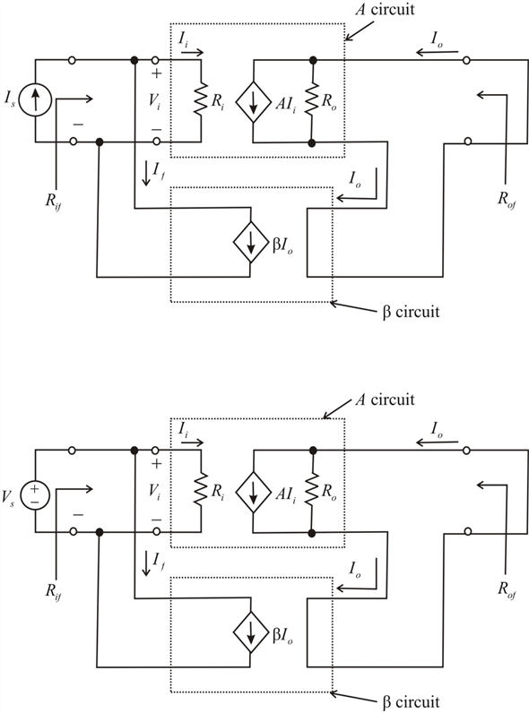
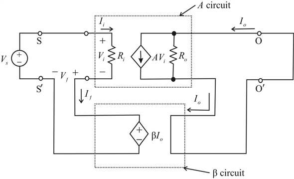
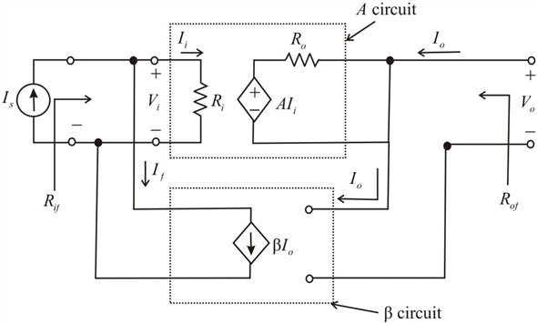

Step 1:
(a)
Identifying the feedback topology to be used Input resistance is to be lowered and output resistance is raised:

Figure 1
Step 2:
The input resistance with feedback is the resistance seen by the current source  and given by,
and given by,
Where, we note that the shunt connection at the input reduces the input resistance.
The output resistance with feedback is the resistance seen by breaking the output circuit, this resistance is given by
Where, we note that the increase in output resistance is due to the current (series) sampling.
Therefore, feedback topology is to be used Input resistance is to be lowered and output resistance is raised.
Step 3:
(b)
Identifying the feedback topology to be used both input and output resistances are to be raised:

Figure 2
Step 4:
This Trans conductance with feedback is included in the equivalent circuit model of the feedback amplifier. In this model is the input resistance with feedback.
is the input resistance with feedback.
This relationship is identical to that obtained in the case of series shunt feedback. This confirms our earlier observation that the relationship between  and is a function only of the method mixing. Voltage (or series) mixing therefore always increases the input resistance.
and is a function only of the method mixing. Voltage (or series) mixing therefore always increases the input resistance.
For the output resistance of series-series feedback amplifier, we reduce
Both input and output resistances are to be raised to zero and break the output circuit to apply attest current.
to zero and break the output circuit to apply attest current.
That is, in this case the negative feedback increases the output resistance. This should have been expected, since the negative feedback tries to make constant in spite of changes in the output voltage, which means increased output resistance.
constant in spite of changes in the output voltage, which means increased output resistance.
Therefore, feedback topology is to be used both input and output resistances are to be raised.
Step 5:
(c)
Identifying the feedback topology to be used both input and output resistances are to be lowered:

Step 6:
Step 7:
The input resistance with feedback is given by
Where we note that, the shunt connection is at the input results in a reduced input resistance. Also note that the resistance  is the resistance seen by the sourceand it includes any source resistance.
is the resistance seen by the sourceand it includes any source resistance.
The output resistance with feedback is given by,
Where we note that, the shunt connection is at the input results in a reduced output resistance. This resistance includes any load resistance.
Therefore, feedback topology is to be used both input and output resistances are to be lowered.